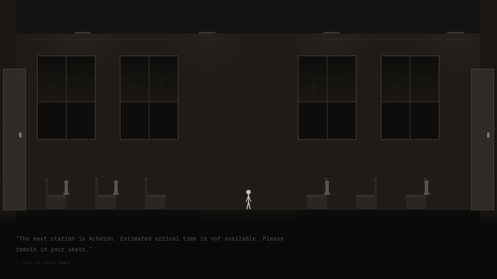
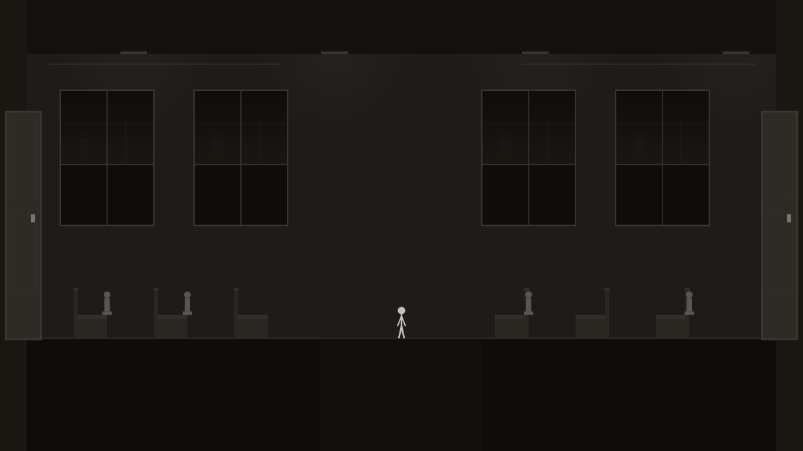
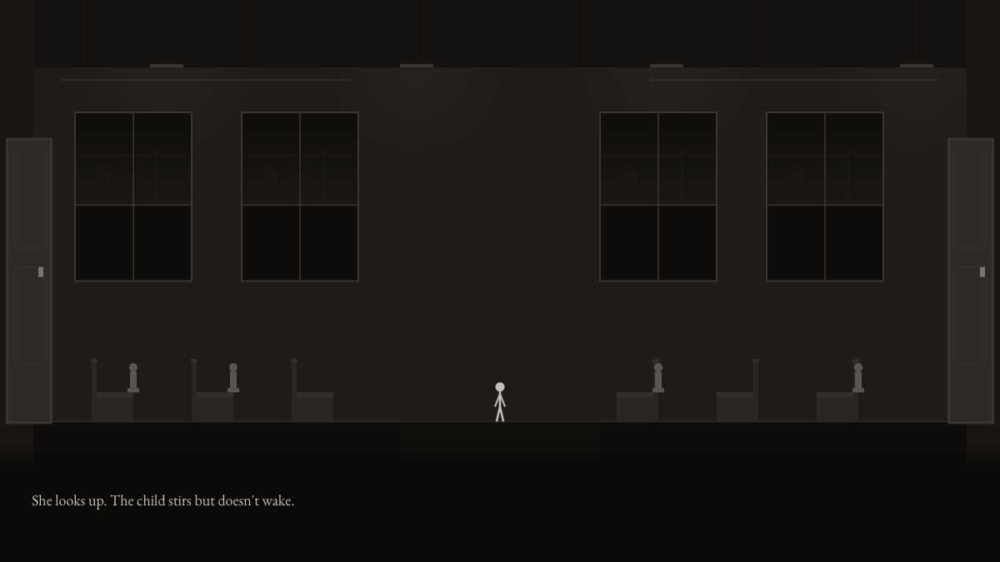
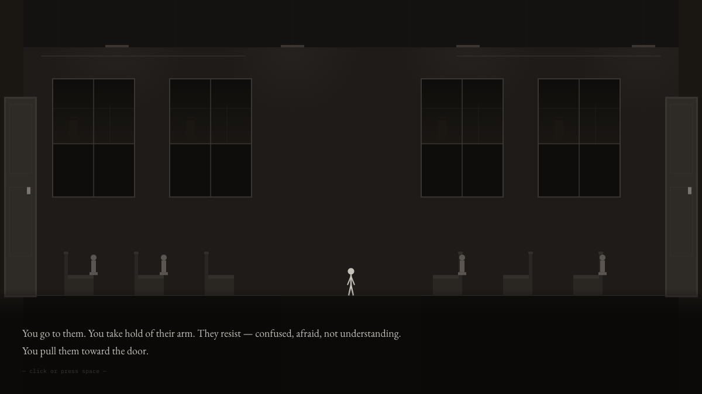
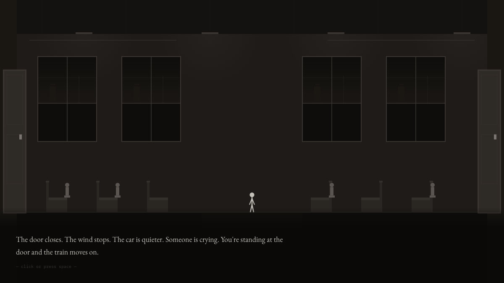

Overview
Terminus is a looping narrative game played in the browser. You wake on a train with no memory of boarding. Five cars stretch ahead of you. Six named passengers sit in various seats. A sixth car is sealed — no handle on your side. A PA announcement welcomes you aboard. The train moves. It doesn't stop.
Each loop resets the world but preserves what you've done. Throw a passenger from the train and they reappear next loop, changed. Ignore everyone and the game notices. The system doesn't punish or reward — it accumulates. Eventually, every passenger walks through the sealed door on their own.
Why I Made This
The earlier games in the series explored atmosphere through landscape, archaeology, and domesticity. Terminus explores it through confinement and repetition. I wanted to build a game where the player's relationship to the system — not the story — is the thing that changes.
The premise comes from a simple question: what happens when the most violent action available is also the most informative? Throwing a passenger from the train is the only way to see the hallucination — the only colour in the entire game. But it also advances that passenger toward disappearance. The game creates a tension between curiosity and consequence that doesn't resolve.
Structurally, the loop mechanic let me explore something the earlier games couldn't: how repetition changes meaning. The same PA announcement heard ten times becomes sinister. The same car description read after everyone is gone becomes a different sentence. The writing doesn't change — the player does.
Player Experience
You move between five train cars using arrow keys. Each car is rendered as a monochrome interior — seats, windows, doors, overhead luggage racks. Passengers sit or stand depending on how many times they've been thrown. You can approach anyone and talk to them, or open the action menu to throw them from the carriage.
When someone is thrown, the game cuts to a hallucination sequence — the only moment colour appears. Deep arterial red fills the screen. Fragments of liturgical text scroll across layered planes. Seated figures made of repeated words appear in rows. A central wound pulses. Then it ends, and you're back on the train.
Each passenger has six tiers of dialogue, unlocked by cumulative throws. The Talker describes a room with a speaking wound. The Counter tallies resets on the wall. The Liar gives a different name each time. The Mother holds a child who never wakes. The Sleeper's eyes are always closed — until they aren't. The Mute never speaks. By tier five, every passenger walks through the sealed door and disappears.
If you do nothing — take no action for consecutive loops — the game shifts. Narration becomes third-person. Descriptions become bureaucratic. The PA announcement shortens to a single word. Eventually the game resets itself, with or without you.
Key Features
- Loop system with persistent state — each loop resets the train but preserves throw counts, dialogue tiers, and population changes. Progress is saved to localStorage across sessions.
- Six named passengers with tiered dialogue — 36 unique dialogue trees (6 passengers x 6 tiers). Each passenger's language and behaviour evolve with every throw, from composed to fragmented to silent.
- Throw mechanic — the central action. Throwing a passenger triggers the hallucination and advances their tier. It's the most violent and most revealing thing you can do. The game tracks which you choose.
- Hallucination sequence — the only colour in the series. Canvas-rendered red space with three visual layers: structural words at 72px, scrolling sermon fragments, and dense monospace text. Higher tiers add seated figures and a pulsing central wound.
- Population decay — nine unnamed passengers thin out over loops. Panickers disappear first, then the still ones, then the followers. One child never disappears. By late loops the train is nearly empty.
- Inactivity detection — the game monitors player engagement. Consecutive loops of no action trigger escalating do-nothing phases: narration shifts to third person, descriptions become minimal, eventually the loop force-resets.
- Pretext Canvas text rendering — all narrative text rendered directly on Canvas using Pretext's DOM-free layout engine. Text is part of the scene composition, not an overlay.
- Sealed car — Car 6 has no handle on the player's side. All tier-five passengers walk through it. What's on the other side is never shown.
Screenshots






Technical Architecture
Terminus uses ES modules with no bundler or build step. Pretext is included as a local library for Canvas text layout. State is persisted to localStorage. The game runs entirely client-side.
The renderer draws train interiors as flat geometric compositions — rectangular seats, trapezoidal windows, door frames with handle details. The hallucination system switches the renderer to a layered text-art mode: large structural words, scrolling fragments, and dense background text are drawn at different opacities and speeds across the Canvas, with the background interpolating from monochrome to deep red.
State management is the most complex in the series. The GameState class tracks loop count, per-passenger throw tiers (0–5), named passenger positions, unnamed passenger arrays (thinned each loop), dialogue history, and inactivity counters. The entire state serialises to JSON and persists via localStorage, so progress survives across sessions.
Pretext handles all narrative text layout. The typewriter reveal system calls prepare() once per text block to cache character measurements, then layout() per frame during the reveal — fast enough for 60fps because the expensive measurement pass is cached.
Place in the Series
Terminus is the fourth game in the Monochrome Narratives series. It's the first to break the monochrome constraint — the hallucination sequence uses deep reds, making it the only colour in the entire series. That violation is deliberate: the red marks the moments where the system reveals itself.
It's also the most systems-driven game in the series. Crows and Owls tracks cumulative tone. The Layer Below tracks excavation progress. Still Life tracks attention toward a single object. Terminus tracks six passengers across five throw tiers, a decaying unnamed population, inactivity counters, and loop state — all persisted across sessions. The complexity is invisible to the player, but it's what makes the repetition feel alive.
Thematically, the series continues to expand. Landscape, archaeology, domesticity, and now confinement. Each game asks a version of the same question: what does it feel like to pay attention to something that doesn't ask for it? Terminus adds a darker follow-up: what does it feel like to act on something that doesn't resist?
Reflections
The hardest part of Terminus was writing six characters who become more interesting the worse you treat them. Each passenger needed to be compelling enough at tier zero that you'd want to talk to them, but their real depth only emerges through the throw mechanic. The Liar's composure cracks across tiers. The Counter's system collapses into a single number. The Sleeper's eyes open. Getting those arcs right — making the violence feel like discovery rather than cruelty — was the central writing challenge.
The do-nothing path was the most surprising thing to design. I expected it to be a footnote — most players will interact. But the game's response to inaction turned out to be some of the strongest writing in the project. When the narration shifts to third person and starts describing you as "the seated one," the discomfort is different from anything the throw mechanic creates. You stop being the subject and become inventory.
The hallucination sequence taught me how powerful a single colour can be after sustained restraint. Three games of pure monochrome, and then red. Players don't see a colour — they feel a rupture. That effect only works because of everything that came before it in the series. Terminus couldn't be the first game. It had to earn that red.